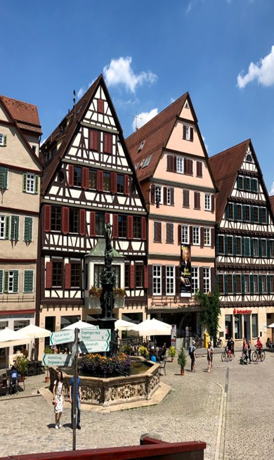

Sustainability & Civic Engagement
Taking climate change into account in our lives is essential, particularly in the electronics sector where progress is possible.
Following awareness meetings organized by Écolos Anonymes and the creation of a poster that was displayed at my engineering school, I became much more interested in this field.